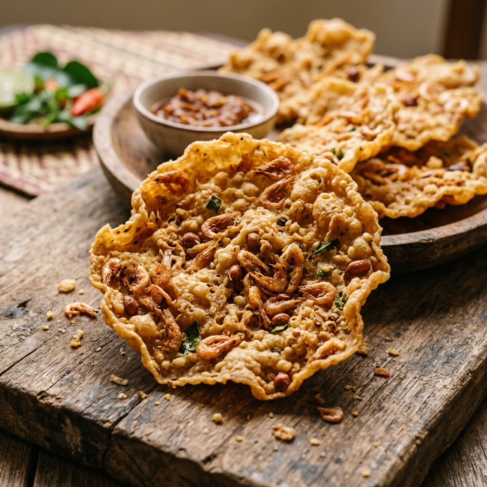
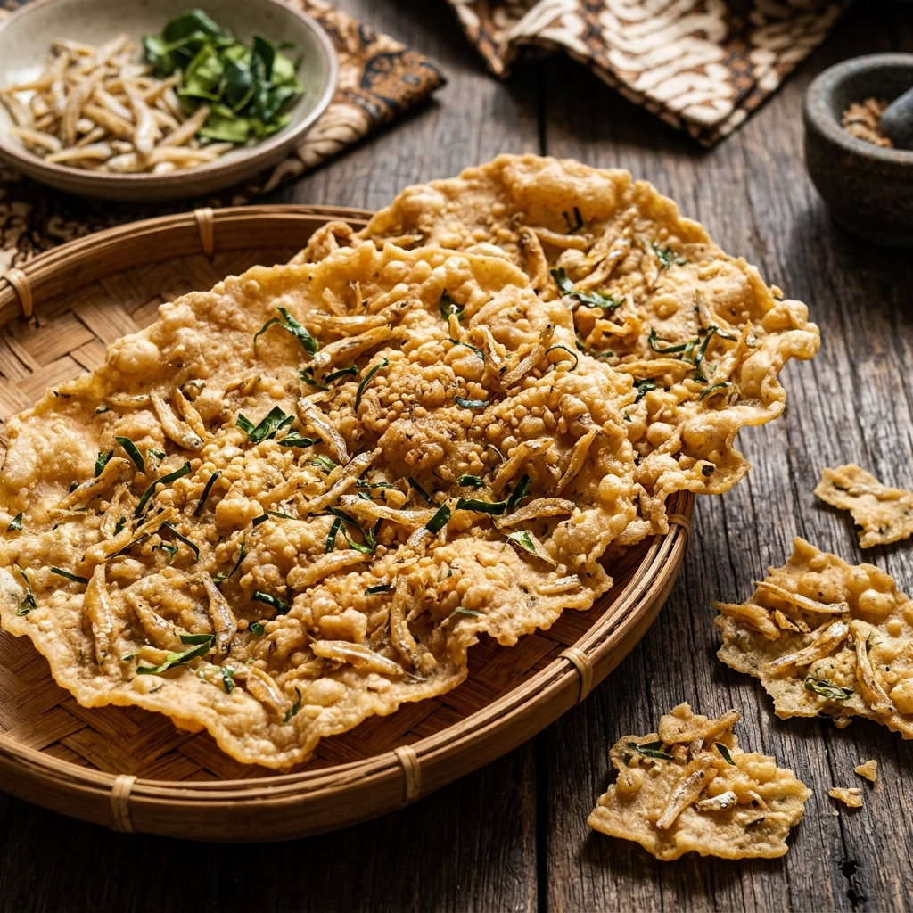

Kemitraan Lokal
Mendukung Petani Lokal & UMKM Nusantara
Kunci dari cita rasa gurih yang istimewa dari Rempeyek Bumi terletak pada kesegaran bahan baku. Kami menjalin kemitraan erat dengan lebih dari 20 petani lokal Sleman dan UMKM bumbu di Yogyakarta.
Harga Beli yang Adil (Fair Trade)
Kami menjamin pembelian bahan baku dengan harga adil yang mendukung kesejahteraan ekonomi petani.
Bahan Segar Tanpa Rantai Distribusi Panjang
Kacang tanah, bawang putih, kemiri, kencur, dan daun jeruk dipetik langsung hari ini untuk diproduksi besok pagi.
Edukasi Pertanian Organik
Kami memberikan pupuk organik dari pengolahan kompos limbah rempeyek kembali ke petani untuk pertanian berkelanjutan.



